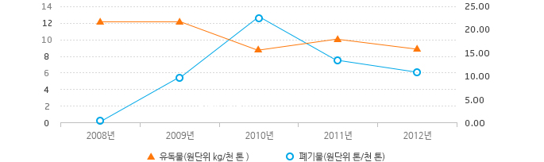

환경오염저감활동
유해화학물질
KOGAS 현장에서 사용되는 주요 유해화학물질은 가성소다(NaOH) 및 염산(HCl) 등이 있습니다. 이는 LNG 기화설비인 연소식기화기(SMV) 수조 내 pH조절용으로 사용되는 가성소다의 사용량이 증가하였기 때문이며 이러한 화학물질 사용량의 저감을 위해 연소식기화기(SMV) 중화제 저감 방안 연구를 수행하였습니다.
유해화학물질 사용량 및 원단위
| 구분 | 2008 | 2009 | 2010년 | 2011년 | 2012년 |
|---|---|---|---|---|---|
| 천연가스 판매량(천 톤) | 26,345 | 24,644 | 31,202 | 33,570 | 36,547 |
| 사용량(kg) | 322,420 | 304,166 | 285,808 | 337,945 | 325,047 |
| 원단위(tCO2eq/천 톤) | 12.23 | 12.34 | 9.16 | 10.07 | 8.89 |

(원단위 톤/천 톤)
| 구분 | 2008 | 2009 | 2010 | 2011 | 2012 |
|---|---|---|---|---|---|
| 유독물 | 12.23 | 12.34 | 9.16 | 10.07 | 8.89 |
| 폐기물 | 0.33 | 9.84 | 22.3 | 14.12 | 10.72 |